Change analysis for Portugal for PRIMAP-hist v2.6_final compared to
v2.5.1_final
Overview over
emissions by sector and gas
The following figures show the aggregate national total emissions
excluding LULUCF AR6GWP100 for the country reported priority scenario.
The dotted linesshow the v2.5.1_final data.
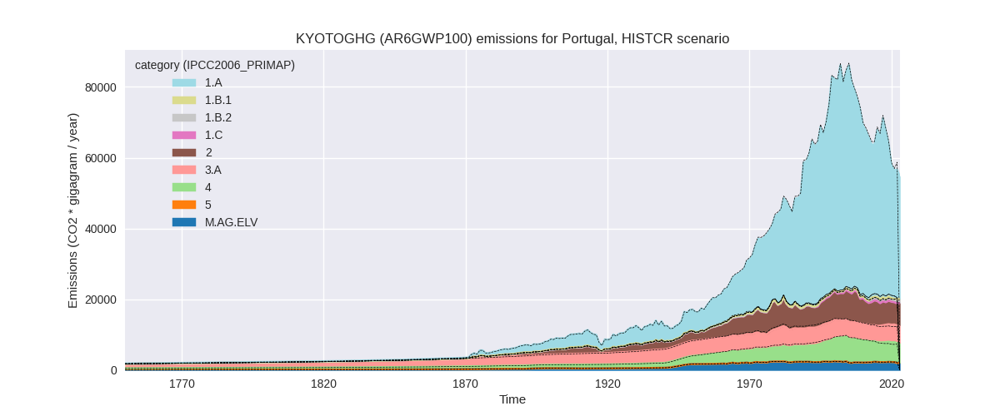
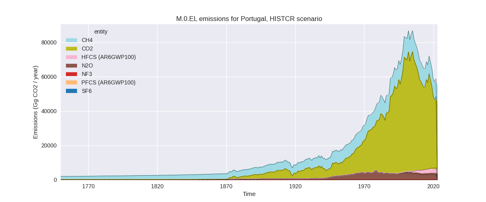
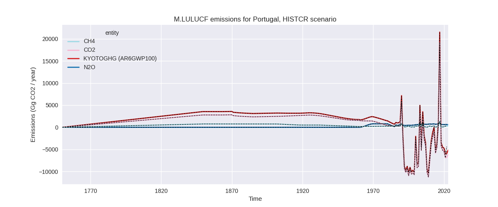
The following figures show the aggregate national total emissions
excluding LULUCF AR6GWP100 for the third party priority scenario. The
dotted linesshow the v2.5.1_final data.
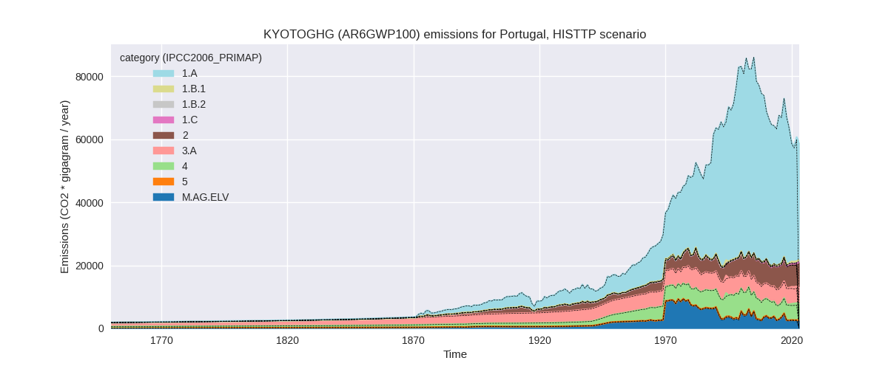
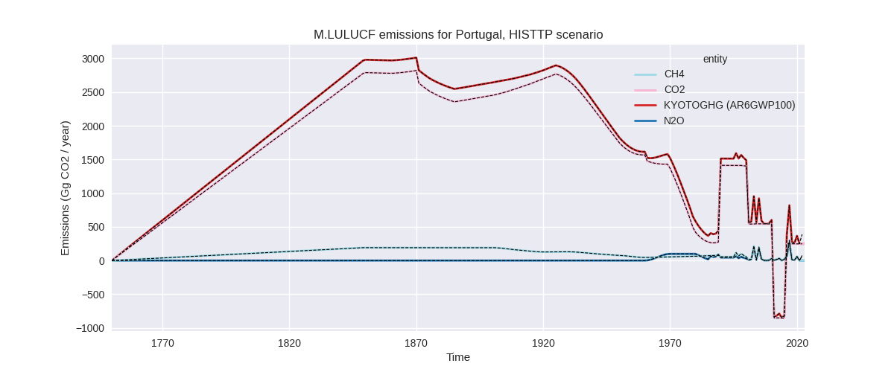
Overview over changes
In the country reported priority scenario we have the following
changes for aggregate Kyoto GHG and national total emissions excluding
LULUCF (M.0.EL):
- Emissions in 2022 have changed by -3.6%% (-2098.13 Gg CO2 / year)
- Emissions in 1990-2022 have changed by -1.0%% (-689.69 Gg CO2 / year)
In the third party priority scenario we have the following changes
for aggregate Kyoto GHG and national total emissions excluding LULUCF
(M.0.EL):
- Emissions in 2022 have changed by 1.5%% (874.95 Gg CO2 / year)
- Emissions in 1990-2022 have changed by 0.1%% (43.82 Gg CO2 / year)
Most
important changes per scenario and time frame
In the country reported priority scenario the
following sector-gas combinations have the highest absolute impact on
national total KyotoGHG (AR6GWP100) emissions in 2022
(top 5):
- 1: 1.A, CO2 with -1649.33 Gg CO2 / year (-4.4%)
- 2: 2, HFCS (AR6GWP100) with -1646.90 Gg CO2 / year (-41.7%)
- 3: 1.B.2, CO2 with 1053.42 Gg CO2 / year (1285.9%)
- 4: 4, N2O with 642.19 Gg CO2 / year (271.5%)
- 5: M.AG.ELV, N2O with -239.88 Gg CO2 / year (-11.4%)
In the country reported priority scenario the
following sector-gas combinations have the highest absolute impact on
national total KyotoGHG (AR6GWP100) emissions in
1990-2022 (top 5):
- 1: 4, CH4 with -552.50 Gg CO2 / year (-9.5%)
- 2: 2, HFCS (AR6GWP100) with -483.00 Gg CO2 / year (-29.6%)
- 3: 4, N2O with 347.60 Gg CO2 / year (144.9%)
- 4: 1.A, CO2 with -47.32 Gg CO2 / year (-0.1%)
- 5: 1.B.2, CO2 with 31.94 Gg CO2 / year (5.8%)
In the third party priority scenario the following
sector-gas combinations have the highest absolute impact on national
total KyotoGHG (AR6GWP100) emissions in 2022 (top
5):
- 1: 4, CH4 with 612.49 Gg CO2 / year (13.5%)
- 2: 1.A, CO2 with 506.91 Gg CO2 / year (1.3%)
- 3: 2, HFCS (AR6GWP100) with -140.86 Gg CO2 / year (-3.3%)
- 4: 1.B.1, CO2 with -121.79 Gg CO2 / year (-100.0%)
- 5: 4, N2O with 7.32 Gg CO2 / year (3.3%)
In the third party priority scenario the following
sector-gas combinations have the highest absolute impact on national
total KyotoGHG (AR6GWP100) emissions in 1990-2022 (top
5):
- 1: 4, CH4 with 110.67 Gg CO2 / year (2.0%)
- 2: 1.B.1, CO2 with -97.29 Gg CO2 / year (-53.6%)
- 3: 1.A, CO2 with 15.72 Gg CO2 / year (0.0%)
- 4: 5, N2O with 10.78 Gg CO2 / year (3.8%)
- 5: 4, N2O with 7.38 Gg CO2 / year (3.6%)
Notes on data changes
Here we list notes explaining important emissions changes for the
country. ’' means that the following text only applies to the TP time
series, while means that it only applies to the CR scenario. Otherwise
the note applies to both scenarios.
- We have included EEA 2024 data for Portugal. 2022 changes are mostly
due to this new data replacing data / growth rates from third party
sources.
- Sector 1.B.2 (oil and gas) has very high relative change.
PRIMAP-hist v2.5.1 showed a steep decline for 2022 while we have
increasing emissions in EEA data. The very low 2022 data point in v2.5.1
likely comes from a scaling problem due to the almost zero EDGAR 8.0
data.
- Waste N2O emissions in the CR scenario are over 140% higher
cumulatively and over 270% higher in 2022. This increase is due to an
increase in estimates for emissions from domestic wastewater treatment
and discharge.
- Cumulative CH4 emissions from waste are roughly 10% lower than in
v2.5.1 due to lower country reported emissions. HFCs emissions are lower
in the CR scenario after 2000 because emissions from refrigeration and
air conditioning are lower in EEA 2024 than in CRF 2023.
- 2022 changes in the TP scenario are due to updated input data and
affect more sectors than energy and cement CO2 as country reported data
are used for f-gas 2022 growth rates and some sectors which are not
covered by EDGAR data for Portugal.
- Changes in sectors 4 and 5 in the TP scenario are due to the removal
of FAOSTAT data.
Changes by sector and gas
For each scenario and time frame the changes are displayed for all
individual sectors and all individual gases. In the sector plot we use
aggregate Kyoto GHGs in AR6GWP100. In the gas plot we usenational total
emissions without LULUCF. ## country reported scenario
2022
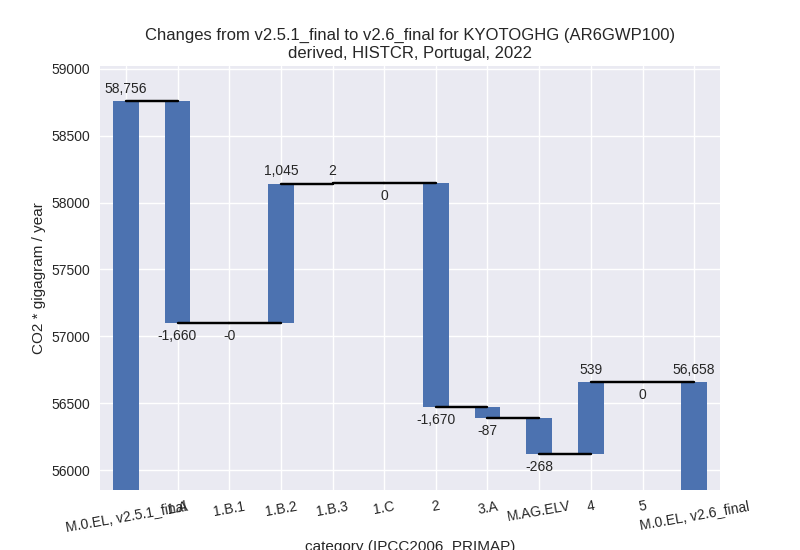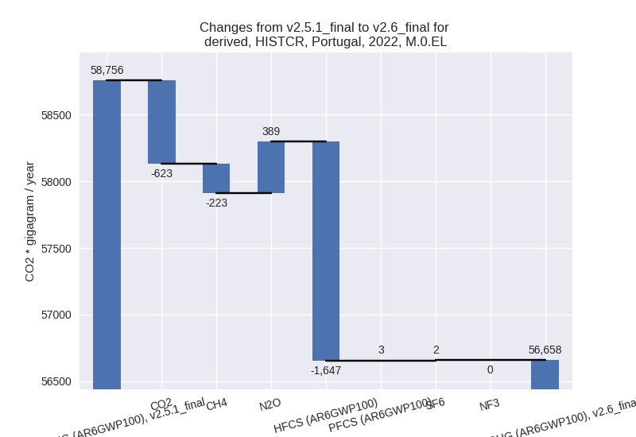
1990-2022
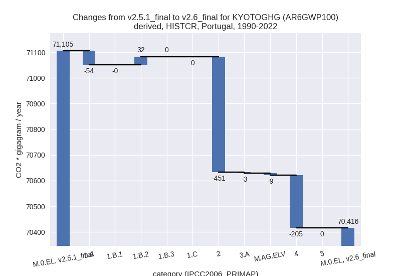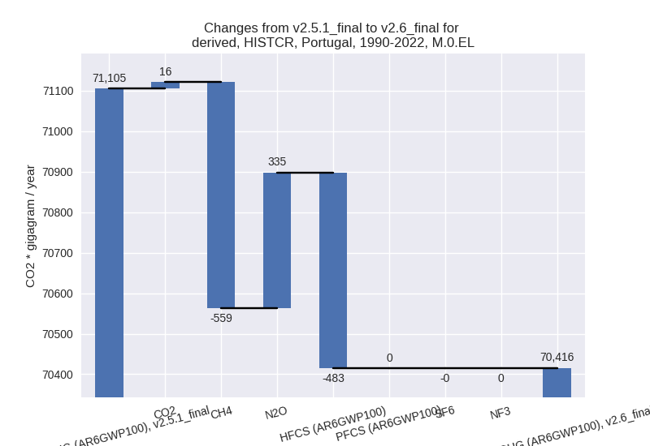
third party scenario
2022
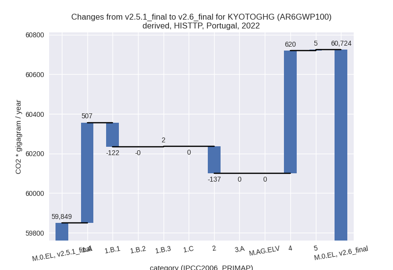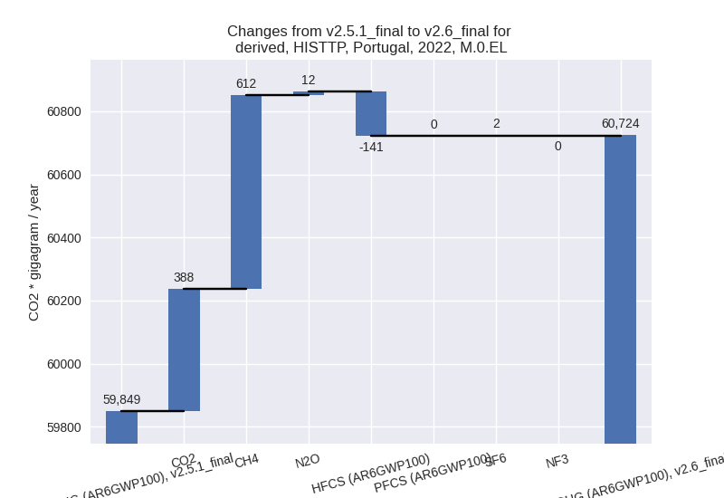
1990-2022
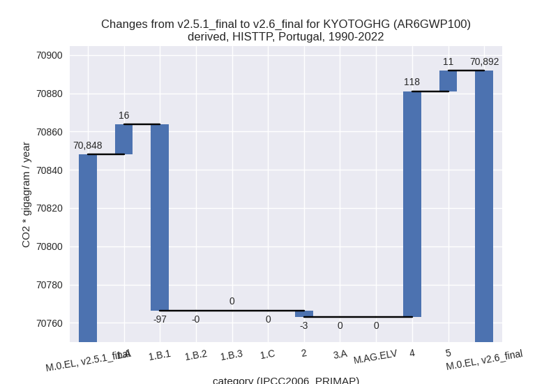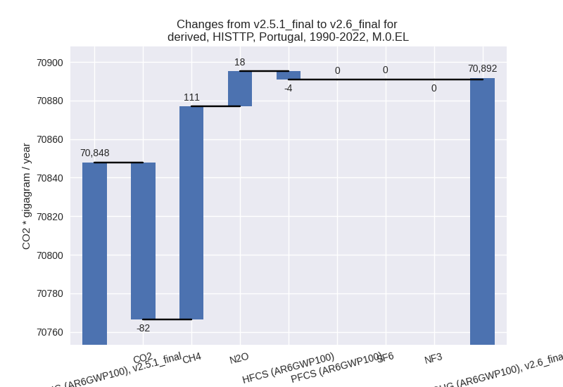
Detailed changes for the
scenarios:
country reported scenario
(HISTCR):
Most important changes
per time frame
For 2022 the following sector-gas combinations have
the highest absolute impact on national total KyotoGHG (AR6GWP100)
emissions in 2022 (top 5):
- 1: 1.A, CO2 with -1649.33 Gg CO2 / year (-4.4%)
- 2: 2, HFCS (AR6GWP100) with -1646.90 Gg CO2 / year (-41.7%)
- 3: 1.B.2, CO2 with 1053.42 Gg CO2 / year (1285.9%)
- 4: 4, N2O with 642.19 Gg CO2 / year (271.5%)
- 5: M.AG.ELV, N2O with -239.88 Gg CO2 / year (-11.4%)
For 1990-2022 the following sector-gas combinations
have the highest absolute impact on national total KyotoGHG (AR6GWP100)
emissions in 1990-2022 (top 5):
- 1: 4, CH4 with -552.50 Gg CO2 / year (-9.5%)
- 2: 2, HFCS (AR6GWP100) with -483.00 Gg CO2 / year (-29.6%)
- 3: 4, N2O with 347.60 Gg CO2 / year (144.9%)
- 4: 1.A, CO2 with -47.32 Gg CO2 / year (-0.1%)
- 5: 1.B.2, CO2 with 31.94 Gg CO2 / year (5.8%)
Changes in the main sectors for aggregate KyotoGHG (AR6GWP100)
are
- 1: Total sectoral emissions in 2022 are 37807.34 Gg
CO2 / year which is 66.7% of M.0.EL emissions. 2022 Emissions have
changed by -1.6% (-612.62 Gg CO2 /
year). 1990-2022 Emissions have changed by -0.0% (-22.26 Gg CO2 / year).
- 2: Total sectoral emissions in 2022 are 6218.08 Gg
CO2 / year which is 11.0% of M.0.EL emissions. 2022 Emissions have
changed by -21.2% (-1669.94 Gg CO2 /
year). 1990-2022 Emissions have changed by -6.1% (-450.77 Gg CO2 / year). For 2022
the changes per gas
are:
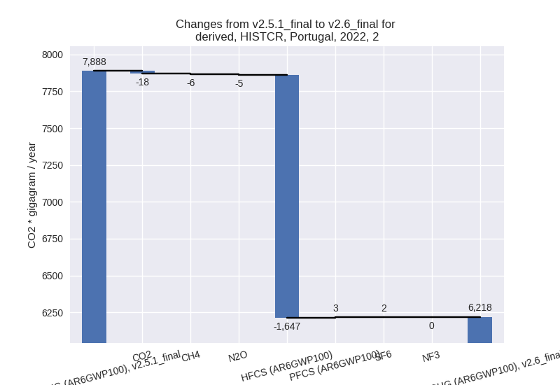
For 1990-2022 the changes per gas
are:
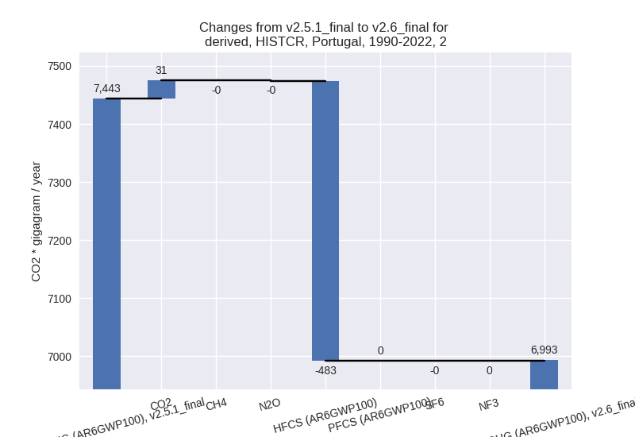
- M.AG: Total sectoral emissions in 2022 are 6981.36
Gg CO2 / year which is 12.3% of M.0.EL emissions. 2022 Emissions have
changed by -4.8% (-354.56 Gg CO2 /
year). 1990-2022 Emissions have changed by -0.2% (-11.67 Gg CO2 / year). For 2022 the
changes per gas
are:
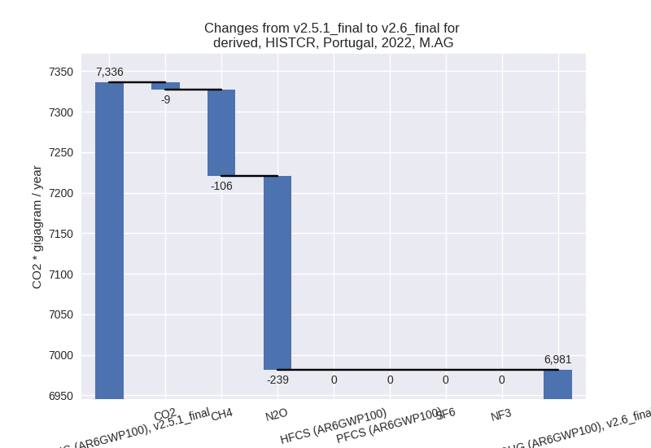
The changes come from the following subsectors:
- 3.A: Total sectoral emissions in 2022 are 4945.33
Gg CO2 / year which is 70.8% of category M.AG emissions. 2022 Emissions
have changed by -1.7% (-86.65 Gg CO2
/ year). 1990-2022 Emissions have changed by -0.1% (-3.08 Gg CO2 / year).
- M.AG.ELV: Total sectoral emissions in 2022 are
2036.03 Gg CO2 / year which is 29.2% of category M.AG emissions. 2022
Emissions have changed by -11.6%
(-267.91 Gg CO2 / year). 1990-2022 Emissions have changed by -0.4% (-8.59 Gg CO2 / year). For 2022 the
changes per gas
are:
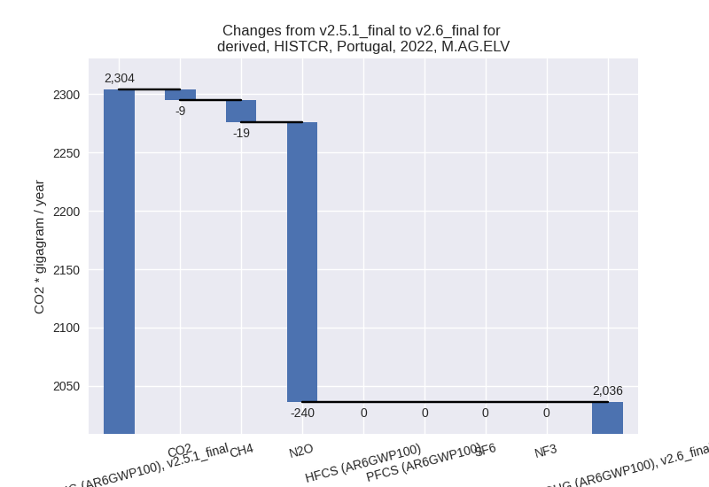
There is no subsector information available in PRIMAP-hist.
- 4: Total sectoral emissions in 2022 are 5651.53 Gg
CO2 / year which is 10.0% of M.0.EL emissions. 2022 Emissions have
changed by 10.5% (538.99 Gg CO2 /
year). 1990-2022 Emissions have changed by -3.4% (-204.99 Gg CO2 / year). For 2022
the changes per gas
are:
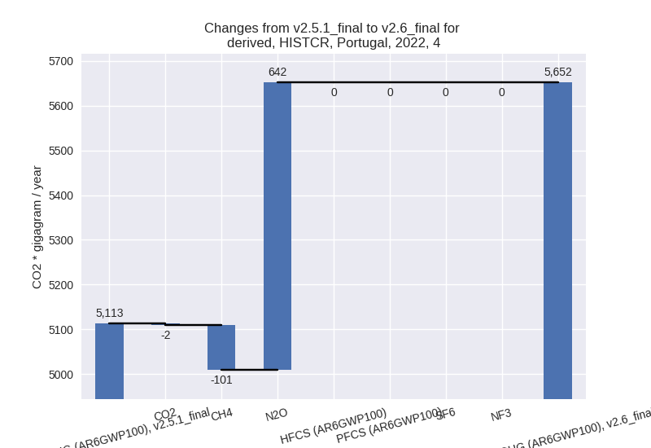
For 1990-2022 the changes per gas
are:
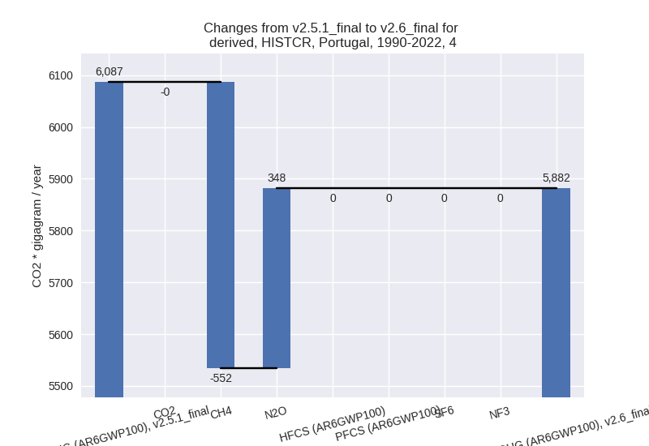
- 5: No data
third party scenario (HISTTP):
Most important changes
per time frame
For 2022 the following sector-gas combinations have
the highest absolute impact on national total KyotoGHG (AR6GWP100)
emissions in 2022 (top 5):
- 1: 4, CH4 with 612.49 Gg CO2 / year (13.5%)
- 2: 1.A, CO2 with 506.91 Gg CO2 / year (1.3%)
- 3: 2, HFCS (AR6GWP100) with -140.86 Gg CO2 / year (-3.3%)
- 4: 1.B.1, CO2 with -121.79 Gg CO2 / year (-100.0%)
- 5: 4, N2O with 7.32 Gg CO2 / year (3.3%)
For 1990-2022 the following sector-gas combinations
have the highest absolute impact on national total KyotoGHG (AR6GWP100)
emissions in 1990-2022 (top 5):
- 1: 4, CH4 with 110.67 Gg CO2 / year (2.0%)
- 2: 1.B.1, CO2 with -97.29 Gg CO2 / year (-53.6%)
- 3: 1.A, CO2 with 15.72 Gg CO2 / year (0.0%)
- 4: 5, N2O with 10.78 Gg CO2 / year (3.8%)
- 5: 4, N2O with 7.38 Gg CO2 / year (3.6%)
Changes in the main sectors for aggregate KyotoGHG (AR6GWP100)
are
- 1: Total sectoral emissions in 2022 are 40076.08 Gg
CO2 / year which is 66.0% of M.0.EL emissions. 2022 Emissions have
changed by 1.0% (387.20 Gg CO2 /
year). 1990-2022 Emissions have changed by -0.2% (-81.52 Gg CO2 / year).
- 2: Total sectoral emissions in 2022 are 7341.67 Gg
CO2 / year which is 12.1% of M.0.EL emissions. 2022 Emissions have
changed by -1.8% (-137.39 Gg CO2 /
year). 1990-2022 Emissions have changed by -0.1% (-3.43 Gg CO2 / year).
- M.AG: Total sectoral emissions in 2022 are 7735.92
Gg CO2 / year which is 12.7% of M.0.EL emissions. 2022 Emissions have
changed by 0.0% (0.00 Gg CO2 /
year). 1990-2022 Emissions have changed by 0.0% (0.00 Gg CO2 / year).
- 4: Total sectoral emissions in 2022 are 5393.06 Gg
CO2 / year which is 8.9% of M.0.EL emissions. 2022 Emissions have
changed by 13.0% (620.14 Gg CO2 /
year). 1990-2022 Emissions have changed by 2.0% (118.00 Gg CO2 / year). For 2022 the
changes per gas
are:
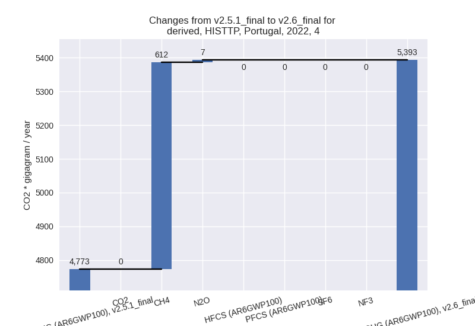
For 1990-2022 the changes per gas
are:
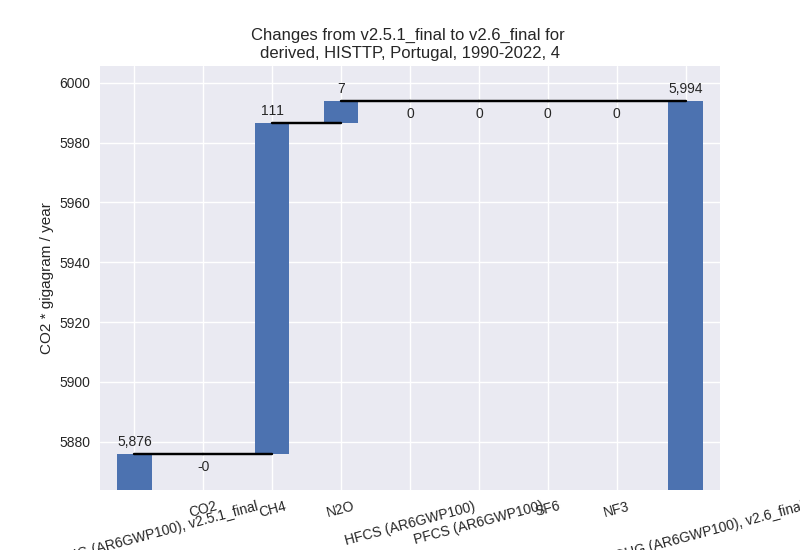
- 5: Total sectoral emissions in 2022 are 177.57 Gg
CO2 / year which is 0.3% of M.0.EL emissions. 2022 Emissions have
changed by 2.9% (5.00 Gg CO2 /
year). 1990-2022 Emissions have changed by 3.8% (10.78 Gg CO2 / year). For 2022 the
changes per gas
are:
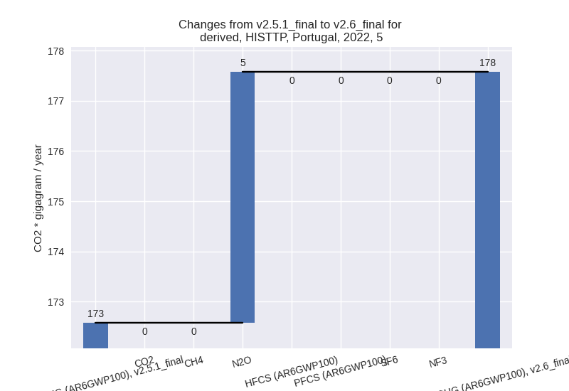
For 1990-2022 the changes per gas
are:
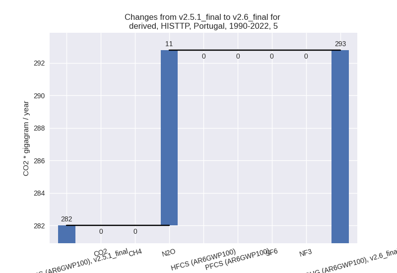